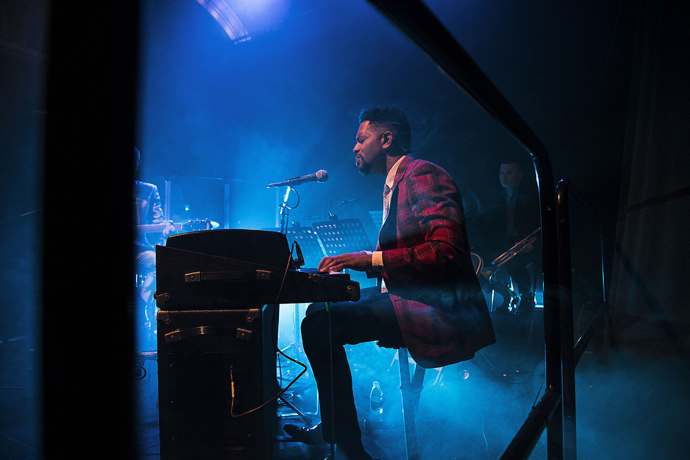
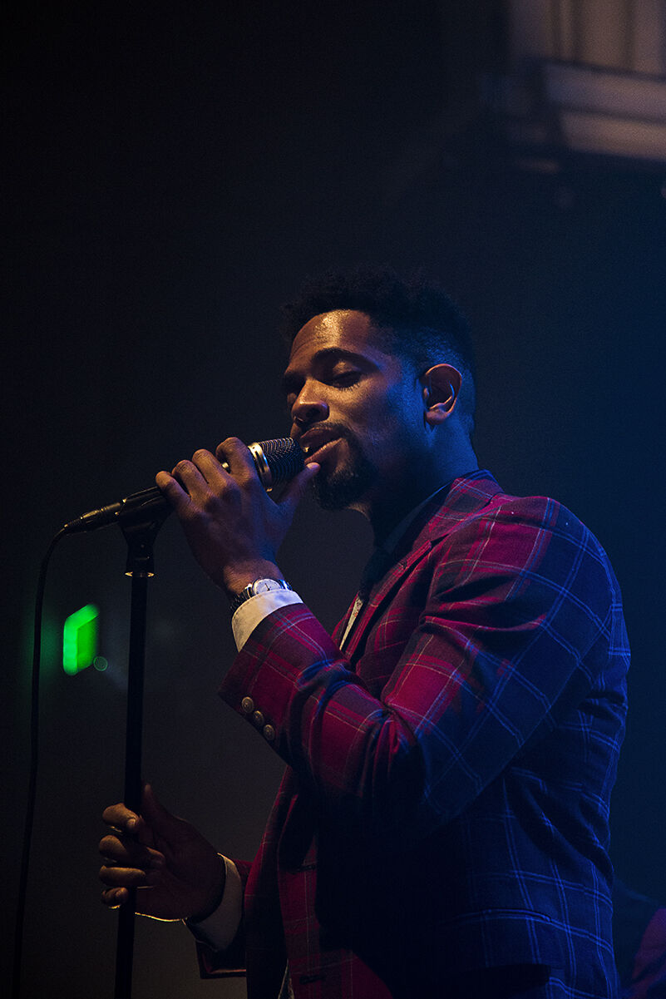
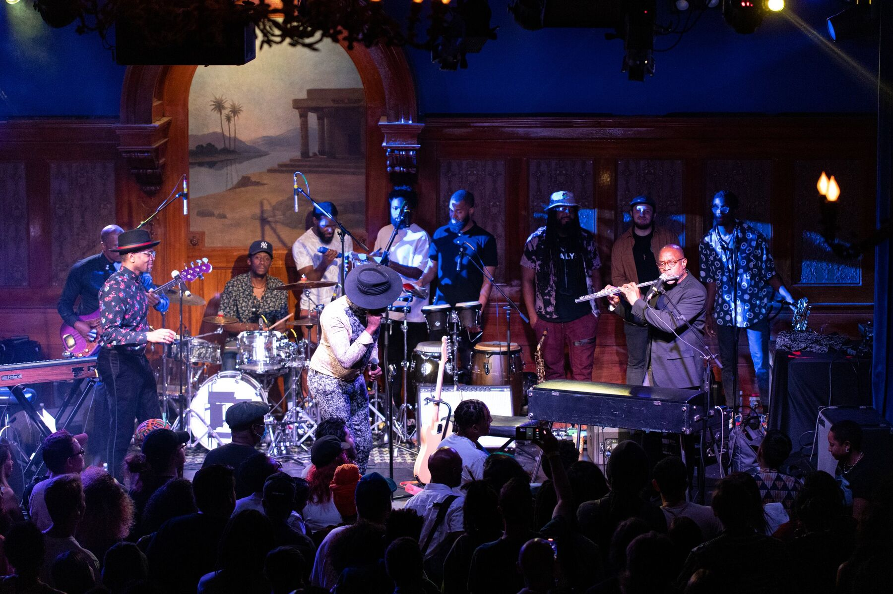

Travel & photographs
From the road
Moments onstage in Los Angeles and England, with more stories from our travels to come.



Travel & photographs
Moments onstage in Los Angeles and England, with more stories from our travels to come.


